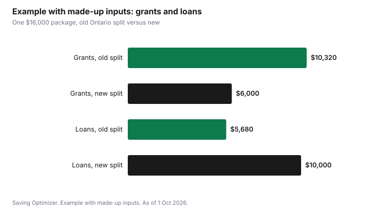

Education · Canada
OSAP in 2026-27: What the 25% Grant Cap Means for Your Aid Package

For Ontario students, OSAP changed on 1 August 2026: at public colleges and universities, no more than 25% of the provincial part of an OSAP package can be a grant, and at least 75% is a loan, as of 1 October 2026. Before, up to 85% of Ontario's portion could be a grant. Federal Canada Student Grants, up to $525 a month for full-time students in 2026-27, are separate, so a student's total grant share can still be above 25%. For a family in Canada planning university or college costs, the practical result is more debt for the same need, and the Ontario portion of that debt accrues interest from the day studies end.
Key takeaways
- Study periods starting on or after 1 August 2026: Ontario's portion is at most 25% grants and at least 75% loans at public colleges and universities.
- Before the change, up to 85% of Ontario's portion could be grants.
- Students at private career colleges get only loans from Ontario.
- Federal grants are separate: up to $525 a month, or $4,200 over eight months, for eligible full-time students in 2026-27.
- Ontario's portion of a loan accrues interest at prime plus 1%, including during the six-month grace period; the federal portion is interest-free.
- Example with made-up inputs: a $16,000 package moves from $10,320 in grants to $6,000, adding $4,320 of loans in one year.
What changed and when
Ontario announced the change on 12 February 2026, alongside a $6.4 billion funding package for colleges and universities and permission to raise domestic tuition by up to 2% a year for three years. The government said OSAP costs reached $2.7 billion in 2025-26 and would have reached $4.1 billion by 2028-29 without changes. The new mix applies to study periods from 1 August 2026 to 31 July 2027 and later.
| School type | Ontario portion before | Ontario portion from 1 Aug 2026 |
|---|---|---|
| Public college or university | Up to 85% grant, at least 15% loan | Up to 25% grant, at least 75% loan |
| Approved private postsecondary school | Mix of grant and loan | More of the provincial aid is loan |
| Private career college | Mix of grant and loan | Ontario aid is all loan |
What stays federal
OSAP is one application for two programs. The Government of Canada provides Canada Student Grants and Canada Student Loans through the same OSAP application, and Ontario provides Ontario Student Grants and Ontario Student Loans. The 25% cap applies only to the Ontario part.
| Federal program | 2026-27 maximum |
|---|---|
| Canada Student Grant for Full-Time Students | $525 per month of study (up to $4,200 over eight months) |
| Canada Student Grant for Full-Time Students with Dependants | $280 per dependant per month |
| Canada Student Grant for Students with Disabilities | $2,800 per year |
| Canada Student Loan, full-time | Up to $300 per week, within assessed need |
The federal grant depends on family income and size. For a family of four in 2026-27, the full grant goes to families with income at or below $76,952, and it phases out completely at about $129,769. The Canada Student Grant guide has the thresholds for every family size. These federal increases are temporary and are set to end on 31 July 2027 unless extended.
Maximum aid for full-time students
OSAP publishes weekly maximums for full-time students. For 2026-27 at a public college or university in Ontario, the maximum is $530 a week for a single student with no dependants and $875 a week for a student who is married, common-law or a sole support parent. These are up from $525 and $865 in 2025-26. Students may receive more than these amounts once federal grants are included, and the actual amount depends on assessed need.
Reading an OSAP estimate
Your OSAP estimate or assessment shows grants and loans separately, by program. Read it line by line:
- Find the federal grant lines. These are not affected by the 25% cap.
- Find the Ontario grant line. It will be no more than a quarter of the Ontario total.
- Add the loan lines and note which are Ontario (interest after study) and which are federal (no interest).
- Check the disbursement schedule. Money usually comes in instalments, with some going straight to tuition.
- Compare the total with your real budget: tuition, fees, books, housing, food, transit and a buffer.
The OSAP calculator is an estimate. Student groups said it was updated late for the new rules, so treat older screenshots or estimates from before the summer of 2026 as out of date.
Low-income students and the Student Access Guarantee
The government has said it will continue to support qualifying low-income students through the Student Access Guarantee and the Ontario Learn and Stay Grant. Under the Student Access Guarantee, if OSAP does not cover a full-time student's direct program costs at an Ontario public college or university, meaning tuition, books and mandatory fees, the school provides additional help such as a bursary, scholarship, work-study or summer job. Ask the financial aid office how it applies at your school, and apply for institutional bursaries every year.
The loan side: interest, grace period and repayment
Federal student loans no longer charge interest. Ontario's portion does: it accrues interest at the prime rate plus 1% from the end of studies, including during the six-month grace period after you graduate or leave full-time studies. You do not have to make payments during those six months, but unpaid Ontario interest is added to the balance at the first payment date. Ontario and Saskatchewan remain the only provinces that charge interest on the provincial portion of student loans.
With 75% of the Ontario portion now a loan, the interest-bearing part of a student's debt is larger. Paying the Ontario interest during the grace period, if you can, stops it from being added to the principal. Repayment assistance programs can lower or pause payments for borrowers with low income after school. Interest you pay on the Ontario portion may qualify for the federal student loan interest tax credit; read the CRA's line 31900 guidance.
Example with made-up inputs: one student's package before and after
These numbers are an example with made-up inputs. They are not an OSAP assessment. A single first-year student at an Ontario university is assessed for a $16,000 package. The federal portion is a $4,200 grant and $4,600 of loans. The Ontario portion is $7,200.
| Line | Old split (85% Ontario grant) | New split (25% Ontario grant) |
|---|---|---|
| Federal grant | $4,200 | $4,200 |
| Ontario grant | $6,120 | $1,800 |
| Federal loan (no interest) | $4,600 | $4,600 |
| Ontario loan (interest after study) | $1,080 | $5,400 |
| Total grants | $10,320 | $6,000 |
| Total loans | $5,680 | $10,000 |
In this example, the student's grants fall by $4,320 for the year and the Ontario loan, which charges interest after school, rises from $1,080 to $5,400. Over four similar years, that would add about $17,280 of Ontario loans before interest. These numbers will be different for every student; the point is to see which lines changed.

A family plan for 2026-27 and 2027-28
- Apply for OSAP every year even if you are unsure of eligibility; federal grants and institutional bursaries often depend on it.
- Plan RESP withdrawals to fill the gap. Educational Assistance Payments can cover living costs, as explained in the RESP withdrawals guide.
- Apply for scholarships and bursaries early; see the scholarship calendar.
- Keep the Ontario loan as small as you can. If you must borrow, consider declining part of the Ontario loan if family savings can cover it, after reading how that affects other aid.
- Budget for 2027-28 with a smaller federal grant in case the temporary increase ends on 31 July 2027.
- Budget for tuition rising by up to 2% a year at Ontario public institutions.
| Line | Amount | Repayable? | Interest after study? |
|---|---|---|---|
| Federal grant(s) | No | No | |
| Ontario grant | No | No | |
| Federal loan | Yes | No | |
| Ontario loan | Yes | Yes, prime plus 1% | |
| Total |
Common mistakes
- Using an OSAP estimate from before the change.
- Assuming the whole package is 75% loan; federal grants are on top.
- Ignoring the Ontario interest during the grace period.
- Not applying because you expect only loans; federal grants and school aid can depend on an OSAP application.
- Forgetting that the federal grant increase is temporary.
Sources
- CBC News, Tuition set to rise, OSAP grants lower with new Ontario post-secondary funding changes, 12 Feb 2026; and Students brace for debt, reconsider studies as OSAP cuts take effect, 25 Aug 2026. 25% grant maximum from 1 Aug; previously 85%; career colleges loans only; $2.7 billion and $4.1 billion cost figures; Student Access Guarantee and Learn and Stay Grant; Ontario and Saskatchewan charge provincial loan interest.
- Government of Ontario, Ontario investing $6.4 billion to support postsecondary sector (news release 12 Feb 2026), as of 1 Oct 2026.
- Government of Ontario, Maximum amounts of aid (ontario.ca, updated 12 Aug 2026), as of 1 Oct 2026. $530 and $875 weekly maximums for 2026-27.
- Government of Ontario, Pay back OSAP (ontario.ca), as of 1 Oct 2026. Ontario portion at prime plus 1%; six-month grace period; federal portion interest-free.
- Canada Gazette Part II, SOR/2026-139, Regulations Amending the Canada Student Financial Assistance Regulations, 1 Jul 2026. $525 a month; $300 weekly loan limit to 31 Jul 2027; income thresholds.
- OSAP, Ontario Student Access Guarantee (osap.gov.on.ca), as of 1 Oct 2026.
- The package amounts in the example table and chart are an example with made-up inputs.
Frequently asked questions
What changed with OSAP in 2026-27?
For study periods starting on or after 1 August 2026, Ontario's portion of OSAP at public colleges and universities is no more than 25% grants and at least 75% loans. Before, up to 85% could be grants. Students at private career colleges receive only loans from Ontario.
Does the 25% cap include federal grants?
No. Canada Student Grants are separate and come through the same OSAP application. In 2026-27, eligible full-time students can receive up to $525 a month, or $4,200 over eight months, so a student's total grant share can be above 25%.
Does OSAP charge interest?
The federal portion of an OSAP loan is interest-free. The Ontario portion accrues interest at prime plus 1% after you finish full-time studies, including during the six-month grace period, and unpaid interest is added to the balance at your first payment date.
What is the maximum OSAP for 2026-27?
For full-time study at an Ontario public college or university, OSAP's weekly maximum is $530 for a single student with no dependants and $875 for a student who is married, common-law or a sole support parent. Federal grants can add to these amounts.
Is the Student Access Guarantee still available?
Yes. Ontario says it continues to support low-income students through the Student Access Guarantee. If OSAP does not cover a full-time student's tuition, books and mandatory fees at an Ontario public college or university, the school provides extra help such as a bursary or work-study.
Researched and drafted with AI assistance and fact-checked against official Canadian sources. How we create content.
Disclosure: Saving Optimizer may earn a commission if a partner link is added later, such as a student bank account or student line of credit offer type. No partnership with the Government of Ontario or any lender is claimed on this page, and no lender is ranked. Education only.